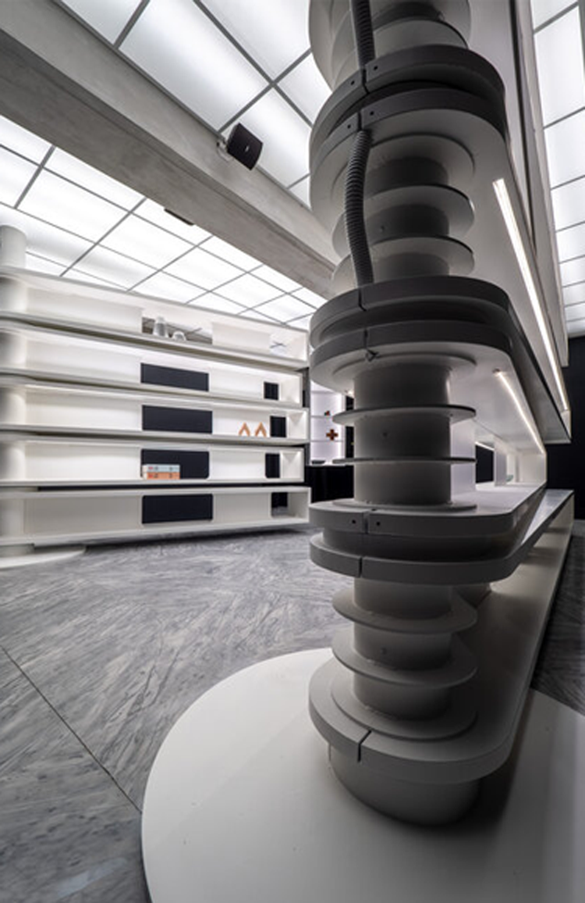
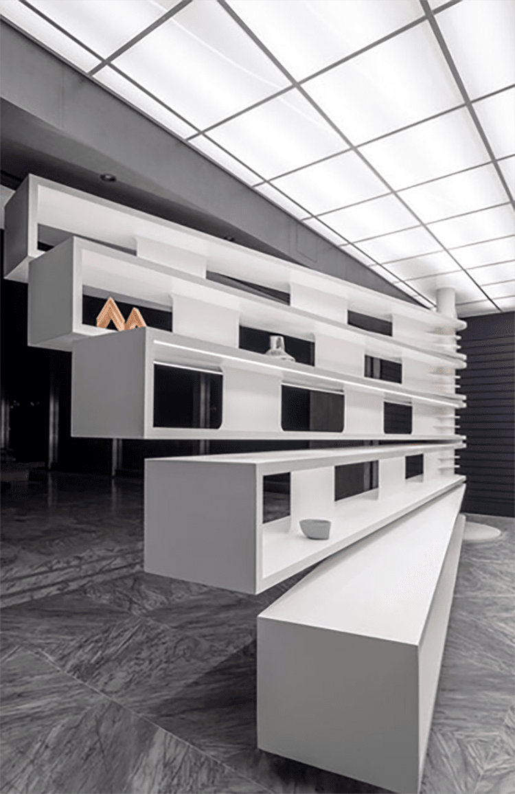

宗旨
假字假字假字假字假字假字假字假字假字假字假字假字假字假字本館肩負推動臺灣現 當代藝術的保存、研究、發展與普及之使命，掌握全球趨勢、建立多元交流管道，提 升普羅大眾對現當代藝術的認知與參與，促使臺灣現當代藝術發展臻至蓬勃，全民藝 術涵養更加豐沛，以期形成具有美感修為及文化思辨力的當代社會。
 圖說圖說圖說圖說圖說圖說
圖說圖說圖說圖說圖說圖說
標題二

圖說圖說圖說圖說圖說
假字假字假字假字假字假字假字假字假字假字假字假字假字假字假字假字假字假字臺北市政府為因應市民生活品質需要與文化藝術水準之提昇，於民國六十七年奉准在本市中山北路三段中山二號公園預定地興建美術館，由高而潘建築師事務所負責設計監造，七十二年元月完工，並於同年十二月二十四日正式落成館，開啟了為市民服務之使命。臺北市立美術館建築本體宏偉而獨特，矗立於花博公園美術園區內，創造出建築藝術與自然庭園環境相結合之自然景觀，其除了講求結構機能合理呈現外，更注重內部設施與維護。
建築物大廳高約十五米，為三層樓挑高，以懸臂飛廊之形式，採「井」字形結體，將傳統建築元素之斗拱堆砌為主體架構，意在以美術館為文化活水之泉源。四周牆面設計使用整片玻璃採光，中樞內庭承接自然光源，光影隨時間移動而變化，顯現出自然生動之特質。各樓層對稱突出且挑高懸空之展覽室，建立耳目一新之觀賞藝術品空間，其向外大型觀景窗又可遠眺環視圓山周遭景物，左側臨中山北路向有國道之稱，歷年來為各國元首訪台必經之路；美術館興建於此，參觀民眾往來轉乘捷運或搭乘公車等交通工具均非常便捷，美術館充分具備了地利與人和之優質場域。臺北市立美術館建築本體宏偉而獨特，矗立於花博公園美術園區內，創造出建築藝術與自然庭園環境相合之自然景觀，其除了講求結構機能合理呈現外，更注重內部設施與維護。建築物大廳高約十五米，為三樓挑高，以懸臂飛廊之形式，採「井」字形結體，將傳統建築元素之斗拱堆砌為主體架構，意在以美術館文化活水之泉源。
四周牆面設計使用整片玻璃採光，中樞內庭承接自然光源，光影隨時間移動而變化，顯出自然生動之特質。各樓層對稱突出且挑高懸空之展覽室，建立耳目一新之觀賞藝術品空間，其向外大型觀景窗又可遠眺環視圓山周遭景物，左側臨中山北路向有國道之稱，歷年來為各國元首訪台必經之路；美術館興建於此，參觀民眾往來轉乘捷運或搭乘公車等交通工具均非常便捷，美術館充分具備了地利與人和之優質場域。
假標題

圖說圖說圖說圖說圖說
假字假字假字假字假字假字假字假字假字假字假字假字假字假字假字假字假字假字臺北市政府為因應市民生活品質需要與文化藝術水準之提昇，於民國六十七年奉准在本市中山北路三段中山二號公園預定地興建美術館，由高而潘建築師事務所負責設計監造，七十二年元月完工，並於同年十二月二十四日正式落成館，開啟了為市民服務之使命。臺北市立美術館建築本體宏偉而獨特，矗立於花博公園美術園區內，創造出建築藝術與自然庭園環境相結合之自然景觀，其除了講求結構機能合理呈現外，更注重內部設施與維護。建築物大廳高約十五米，為三層樓挑高，以懸臂飛廊之形式，採「井」字形結體，將傳統建築元素之斗拱堆砌為主體架構，意在以美術館為文化活水之泉源。四周牆面設計使用整片玻璃採光，中樞內庭承接自然光源，光影隨時間移動而變化，顯現出自然生動之特質。
各樓層對稱突出且挑高懸空之展覽室，建立耳目一新之觀賞藝術品空間，其向外大型觀景窗又可遠眺環視圓山周遭景物，左側臨中山北路向有國道之稱，歷年來為各國元首訪台必經之路；美術館興建於此，參觀民眾往來轉乘捷運或搭乘公車等交通工具均非常便捷，美術館充分具備了地利與人和之優質場域。
臺北市立美術館建築本體宏偉而獨特，矗立於花博公園美術園區內，創造出建築藝術與自然庭園環境相合之自然景觀，其除了講求結構機能合理呈現外，更注重內部設施與維護。建築物大廳高約十五米，為三樓挑高，以懸臂飛廊之形式，採「井」字形結體，將傳統建築元素之斗拱堆砌為主體架構，意在以美術館文化活水之泉源。四周牆面設計使用整片玻璃採光，中樞內庭承接自然光源，光影隨時間移動而變化，顯出自然生動之特質。
各樓層對稱突出且挑高懸空之展覽室，建立耳目一新之觀賞藝術品空間，其向外大型觀景窗又可遠眺環視圓山周遭景物，左側臨中山北路向有國道之稱，歷年來為各國元首訪台必經之路；美術館興建於此，參觀民眾往來轉乘捷運或搭乘公車等交通工具均非常便捷，美術館充分具備了地利與人和之優質場域。
臺北市立美術館建築本體宏偉而獨特，矗立於花博公園美術園區內，創造出建築藝術與自然庭園環境相結合之自然景觀，其除了講求結構機能合理呈現外，更注重內部設施與維護。建築物大廳高約十五米，為三層樓挑高，以懸臂飛廊之形式，採「井」字形結體，將傳統建築元素之斗拱堆砌為主體架構，意在以美術館為文化活水之泉源。四周牆面設計使用整片玻璃採光，中樞內庭承接自然光源，光影隨時間移動而變化，顯現出自然生動之特質。
各樓層對稱突出且挑高懸空之展覽室，建立耳目一新之觀賞藝術品空間，其向外大型觀景窗又可遠眺環視圓山周遭景物，左側臨中山北路向有國道之稱，歷年來為各國元首訪台必經之路；美術館興建於此，參觀民眾往來轉乘捷運或搭乘公車等交通工具均非常便捷，美術館充分具備了地利與人和之優質場域。